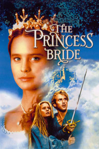

The Princess Bride is one of my favorite movies because I grew up watching it. I enjoy this film because it has an interesting story line filled with well developped and complex characters and it is a funny movie.
"Hello. My name is Inigo Montoya. You killed my father. Prepare to die."
One of my favorite actors is Will Ferrell because, while he is mostly portrayed in films as the goofy, childish character, he is capable of playing more complex and serious roles. I also enjoy most, if not all, the movies he is in.